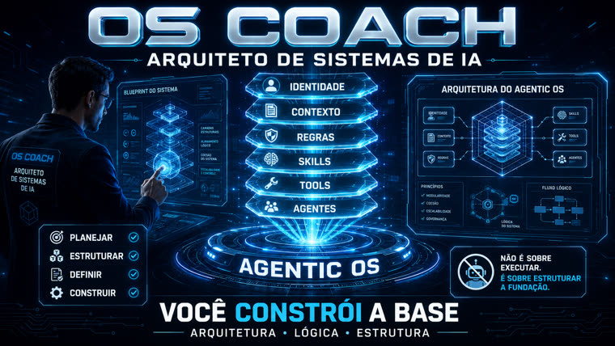
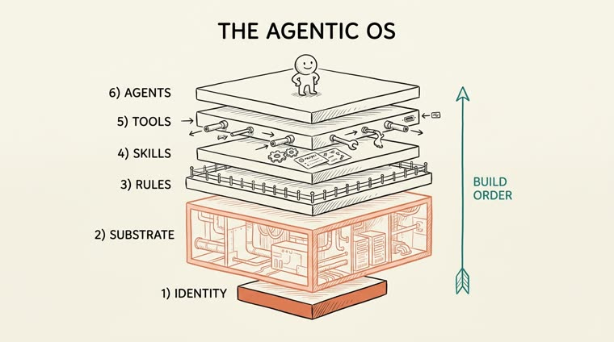
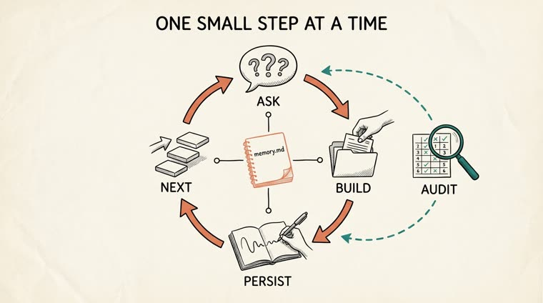

Un entrenador personal que hace 2 o 3 preguntas en lenguaje claro y construye, capa por capa, los archivos y carpetas reales de tu propio sistema operativo agéntico. No necesitas saber programar: la skill hace el trabajo técnico, tú solo decides.

El modelo de IA es el 20 % barato. No puedes conversar con tus datos si todo lo que hay detrás es un desorden; por eso la skill organiza todo primero y solo después añade capacidades.
Nunca suena como un manual. Sin jerga — cuando una palabra técnica es inevitable, viene acompañada de una frase corta y una analogía cotidiana. Da por hecho que nunca abriste una terminal.
No es una conversación: con cada respuesta tuya, crea los archivos y las carpetas reales en tu carpeta, y explica qué hizo y por qué.
Si marcas un campo como privado, nunca escribe ese valor en la carpeta; guarda una referencia que no te identifica.
La Identidad es la base, el Sustrato (lo que hay detrás) es la capa más grande, y los Agentes quedan en la cima — solo después de que todo lo que está debajo esté firme.
Hace 2 o 3 preguntas simples sobre la capa actual y luego se detiene para esperar tu respuesta.
Crea el archivo o la carpeta real de esa capa cuando respondes, adaptado a tu objetivo.
Guarda la decisión y tu lugar en memory.md, para que nada se pierda entre sesiones — y puedes auditar todo en cualquier momento con OS-AUDIT.md.
Sin dependencias, sin claves de API, sin etapa de build.
Instalado en tu máquina.
# verifica la instalación
claude --versionColoca la carpeta os-coach dentro de tus skills de Claude Code.
# instalar
cp -r os-coach ~/.claude/skills/Ejecútalo dentro de cualquier carpeta que quieras convertir en un OS: se convierte en el propio OS.
# dentro de la carpeta
mkdir meu-os && cd meu-osSiempre das un pequeño paso a la vez. El entrenador pregunta, construye, guarda y te indica la siguiente capa.
Di claramente adónde quieres llegar. La skill confirma el objetivo y prepara la carpeta.
/os-coach start Eu vivo perdendo prazos de cliente e quero nunca mais atrasar uma entrega # inicia el OS en la carpeta actual
2 o 3 preguntas simples por vez — para quién es esto, qué debe hacer siempre, qué nunca debe hacer. Escribe el archivo de Identidad (CLAUDE.md) con tus propias palabras.
# escribe algo como ## Recusas inegociáveis (nunca) - Eu nunca mando mensagem para um cliente sem você ler e aprovar antes.
Ve a la siguiente capa sin terminar. Te entrena en Sustrato, Reglas, Skills, Herramientas y Agentes, siempre leyendo y escribiendo en el mismo memory.md.
/os-coach next # pasa a la siguiente capa y la entrena
En cualquier momento, consulta el mapa de progreso desde la memoria o salta directamente a una capa específica.
/os-coach status # mapa de progreso /os-coach layer skills # salta a la capa de Skills
Evalúa las seis capas en relación con tu objetivo, te propone los tres próximos pasos con mayor impacto y escribe el informe en OS-AUDIT.md.
/os-coach audit # boletín + próximos pasos, en orden de prioridad
El mapa completo del OS Agéntico y el ciclo preguntar → construir → guardar → siguiente, que alimenta la auditoría.


OS Coach no ejecuta tareas por ti en el día a día: estructura la base sobre la que puede funcionar un agente confiable.